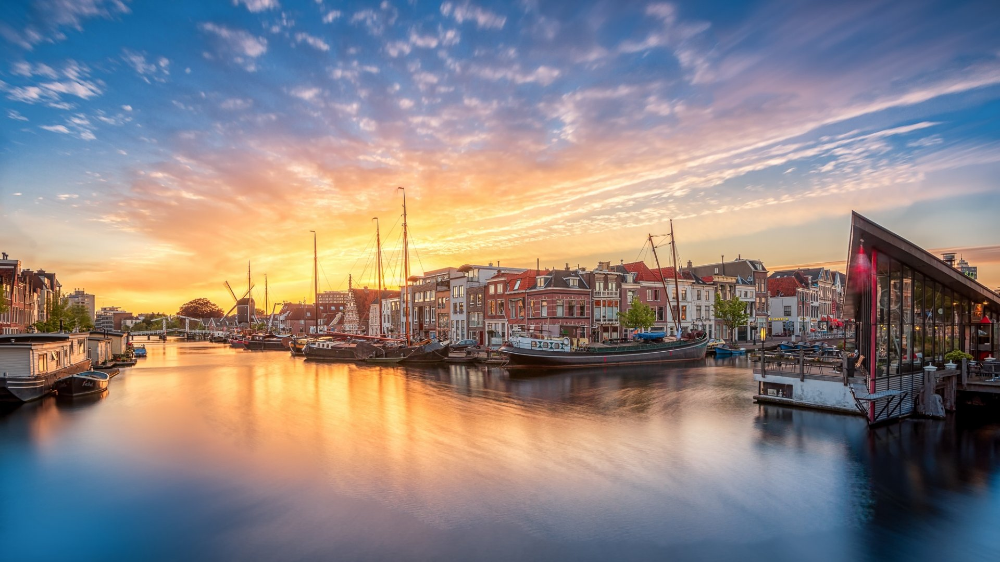
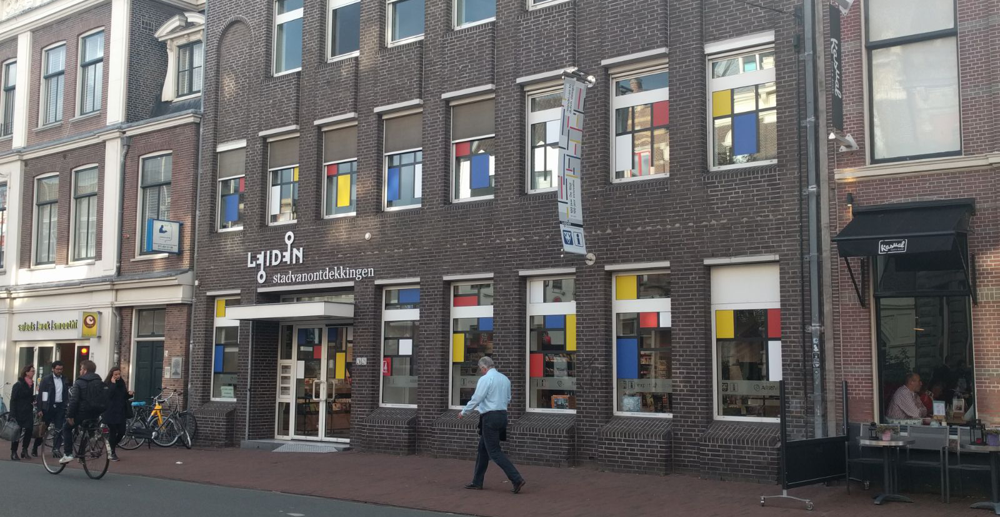
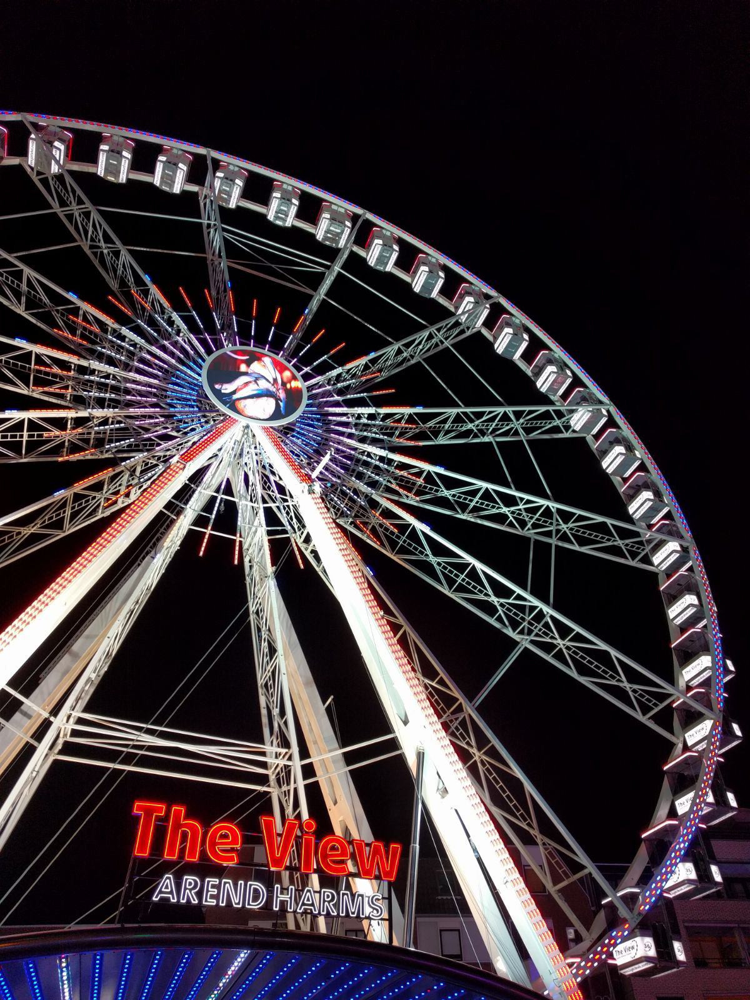
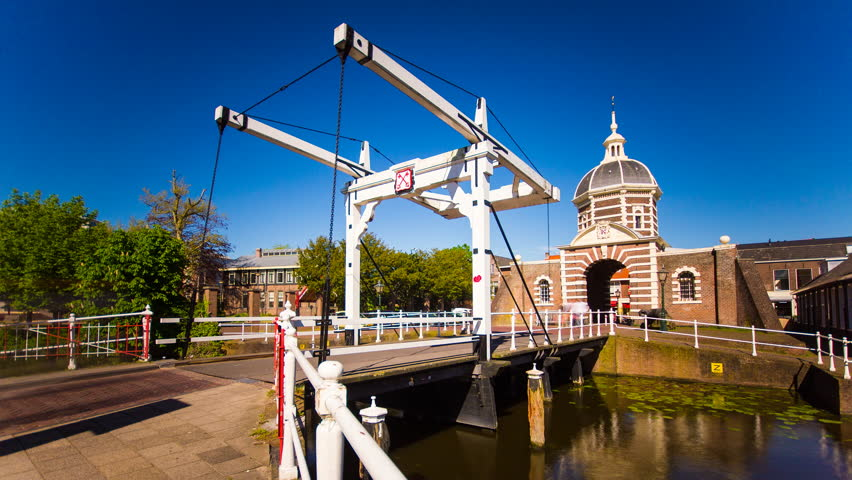

Sources Page
I am a hack
Sources for Home Page
Leiden Wallpapers. (n.d.). Retrieved October 31, 2017, from https://weneedfun.com/leiden-wallpapers/

Erickson, E (2017, September 12)

Erickson, E (2017, September 12)

Erickson, E (2017, September 12)

Erickson, E (2017, September 12)
Image Sources for Getting Started Page
Erickson, E (2017, September 12)

Gemeente Leiden. (n.d.). Retrieved October 31, 2017, from https://www.leiden.nl/gemeente
Information Links for Getting Started Page
Zaken, M. V. (2017, January 26). Visas for the Netherlands. Retrieved October 31, 2017, from https://www.netherlandsandyou.nl/travel-and-residence/visas-for-the-netherlands
W. (n.d.). The Dutch housing market. Retrieved October 31, 2017, from https://www.iamexpat.nl/housing/dutch-housing-market
Welcome at KamerRaad Housing Agency. Good to see you here! (n.d.). Retrieved October 31, 2017, from http://kamerraad.nl/en
Student housing. (n.d.). Retrieved October 31, 2017, from http://www.studenthousing.leiden.edu/housing/
Sources for Letting Lose
Erickson, E (2017, September 12)
Sources for Community Page

Erickson, E (2017, September 12)

Expat Centre Leiden. (n.d.). Retrieved October 31, 2017, from https://www.expatcentreleiden.nl/en
Source for History Page

Erickson, E (2017, September 12)
U. (n.d.). LEIDEN, THE NETHERLANDS - 28 JULY 2013:... Retrieved October 31, 2017, from https://www.shutterstock.com/video/search/leiden/
Source for Information on History Page
Leiden. (2017, October 28). Retrieved October 31, 2017, from https://en.wikipedia.org/wiki/Leiden
Sources for About Me

Erickson, E (2017, September 12)

Erickson, E (2017, September 12)
Source for Contact Page

Erickson, E (2017, September 12)
Footer image

Erickson, E (2017, September 9)